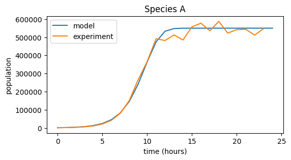
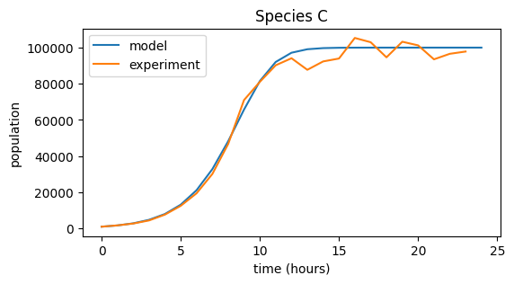
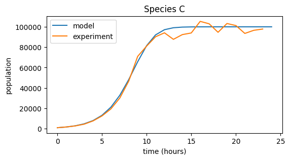
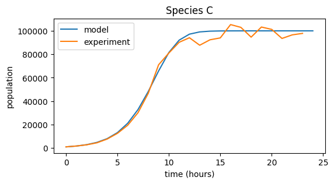

Workshop 4 Answers
Contents
Workshop 4 Answers#
Species X simulation#
import numpy as np
import matplotlib.pyplot as plt
r_X = 1
n_hours = 8
initial_population = 1000
pop_X = np.zeros(n_hours + 1)
pop_X[0] = initial_population
for i in range(n_hours):
pop_X[i + 1] = pop_X[i] + pop_X[i] * r_X
print("Population of species X:", pop_X)
Population of species X: [ 1000. 2000. 4000. 8000. 16000. 32000. 64000. 128000. 256000.]
plt.figure(figsize=(6,3))
plt.plot(pop_X)
plt.xlabel("time (hours)")
plt.ylabel("population")
plt.title("Species X")
Text(0.5, 1.0, 'Species X')

Species Y simulation#
# Population with slower growth rate
r_Y = 0.1
n_hours = 8
initial_population = 1000
pop_Y = np.zeros(n_hours + 1)
pop_Y[0] = initial_population
for i in range(n_hours):
pop_Y[i + 1] = pop_Y[i] + pop_Y[i] * r_Y
print("Population of species Y:", pop_Y)
plt.figure(figsize=(6,3))
plt.plot(pop_Y)
plt.xlabel("time (hours)")
plt.ylabel("population")
plt.title("Species Y")
Population of species Y: [1000. 1100. 1210. 1331. 1464.1 1610.51
1771.561 1948.7171 2143.58881]
Text(0.5, 1.0, 'Species Y')
Species X experimental data#
# Experimental data collected for X
data_X = np.array([ 1. , 2.18, 4.45, 8.91, 16.1 , 31.49, 60.89, 117.58, 214.4 ]) * 1000
# Plot both data and model prediction
plt.figure(figsize=(6,3))
plt.plot(pop_X, label="model")
plt.plot(data_X, label="experiment")
# Figure labels etc
plt.xlabel("time (hours)")
plt.ylabel("population")
plt.title("Species X")
plt.legend()
<matplotlib.legend.Legend at 0x1d869de63c8>
Species Y experimental data#
# Predictive model for Y
r_Y = 0.4
n_hours = 8
initial_population = 1000
pop_Y = np.zeros(n_hours + 1)
pop_Y[0] = initial_population
for i in range(n_hours):
pop_Y[i + 1] = pop_Y[i] + pop_Y[i] * r_Y
# Experimental data collected for Y
data_Y = np.array([ 1., 1.47, 2.02, 2.81, 4.16, 5.88, 7.98, 10.00, 15.59 ]) * 1000
# Plot both data and model prediction
plt.figure(figsize=(6,3))
plt.plot(pop_Y, label="model")
plt.plot(data_Y, label="experiment")
# Figure labels etc.
plt.xlabel("time (hours)")
plt.ylabel("population")
plt.title("Species Y")
plt.legend()
<matplotlib.legend.Legend at 0x1d869d0cb48>

24h experiment#
Loading experimental data:
data_X = np.loadtxt("data_exp_X.txt")
print(data_X)
[1.00000000e+03 2.17777342e+03 4.44576258e+03 8.91456547e+03
1.60958432e+04 3.14897238e+04 6.08883077e+04 1.17580768e+05
2.14397399e+05 3.81989811e+05 6.03315856e+05 7.87285829e+05
9.96982461e+05 1.04405640e+06 1.08337178e+06 9.95533440e+05
9.79746583e+05 9.72332987e+05 9.21969859e+05 1.04273060e+06
9.43221236e+05 9.37714865e+05 9.85877957e+05 1.07409317e+06]
r_X = 1
n_hours = 24
initial_population = 1000
pop_X = np.zeros(n_hours + 1)
pop_X[0] = initial_population
for i in range(n_hours):
pop_X[i + 1] = pop_X[i] + pop_X[i] * r_X
plt.figure(figsize=(6,3))
plt.plot(pop_X, label="model")
plt.plot(data_X, label="experiment")
# Uncomment the line below to get a more informative figure
plt.ylim(0, 1.2e6)
plt.xlabel("time (hours)")
plt.ylabel("population")
plt.title("Species X")
plt.legend()
<matplotlib.legend.Legend at 0x1d869f15988>
plt.figure(figsize=(6,3))
plt.plot(data_X)
[<matplotlib.lines.Line2D at 0x1d869f4dd08>]
Logistic Growth#
Species X#
# Set up model for species X
r_X = 1
K_X = 1e6
n_hours = 24
initial_population = 1000
pop_X = np.zeros(n_hours + 1)
pop_X[0] = initial_population
# Simulate logistic growth
for i in range(n_hours):
pop_X[i + 1] = pop_X[i] + pop_X[i] * r_X * (1 - pop_X[i]/K_X)
# Plot of model and experimental data
plt.figure(figsize=(6,3))
plt.plot(pop_X, label="model")
plt.plot(data_X, label="experiment")
plt.xlabel("time (hours)")
plt.ylabel("population")
plt.title("Species X")
plt.legend()
<matplotlib.legend.Legend at 0x1d869ee9848>
Species Y#
# Load 24h experimental data
data_Y = np.loadtxt("data_exp_Y.txt")
# Set up logistic model for species Y
r_Y = 0.45
K_Y = 5e4
n_hours = 24
initial_population = 1000
pop_Y = np.zeros(n_hours + 1)
pop_Y[0] = initial_population
for i in range(n_hours):
pop_Y[i + 1] = pop_Y[i] + pop_Y[i] * r_Y * (1 - pop_Y[i]/K_Y)
plt.figure(figsize=(6,3))
plt.plot(pop_Y, label="model")
plt.plot(data_Y, label="experiment")
plt.xlabel("time (hours)")
plt.ylabel("population")
plt.title("Species Y")
plt.legend()
<matplotlib.legend.Legend at 0x1d869fe89c8>

Exercise#
Load experimental data for species A, B, C
data_A = np.loadtxt("data_exp_A.txt")
data_B = np.loadtxt("data_exp_B.txt")
data_C = np.loadtxt("data_exp_C.txt")
# Write a function for logistic growth
def logistic_growth(r, K, x_0, t_max):
pop = np.zeros(t_max + 1)
pop[0] = x_0
for i in range(t_max):
pop[i + 1] = pop[i] + pop[i] * r * (1 - pop[i]/K)
return pop
# Growth parameters for each species (adjust values to achieve good fit!)
r = [.9, .4, .7]
K = [5.5e5, 5.5e4, 1e5]
x_0 = [1000, 10000, 1000]
names = ['A', 'B', 'C']
for i, species in enumerate((data_A, data_B, data_C)):
# Model population growth with species' parameters
pop = logistic_growth(r[i], K[i], x_0[i], 24)
# Plot model and data
plt.figure(figsize=(6,3))
plt.plot(pop, label="model")
plt.plot(species, label="experiment")
plt.xlabel("time (hours)")
plt.ylabel("population")
plt.title("Species {0}".format(names[i]))
plt.legend()

 


Solution#
Species |
Dataset |
r |
K |
\(x_0\) |
|---|---|---|---|---|
1 |
B |
0.4 |
5.5e4 |
10000 |
2 |
C |
0.7 |
1e5 |
1000 |
3 |
A |
0.9 |
5.5e5 |
1000 |
Epidemic model#
# Define epidemic model function
def epidemic(a, b, t_max, S_0, I_0):
S = np.zeros(t_max + 1)
I = np.zeros(t_max + 1)
S[0] = S_0
I[0] = I_0
for i in range(t_max):
S[i+1] = S[i] - b * S[i] * I[i]
I[i+1] = I[i] + b * S[i] * I[i] - a * I[i]
return S, I
# Create model, vary values of a and b
a = 0.07
b = 0.00002
S_0 = 20000
I_0 = 100
t_max = 100
S, I = epidemic(a, b, t_max, S_0, I_0)
plt.figure(figsize=(6,3))
plt.plot(S, label="Susceptible population")
plt.plot(I, label="Infected population")
# Display legend
plt.legend()
<matplotlib.legend.Legend at 0x1d86a2c1288>